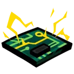
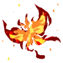
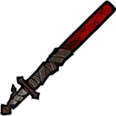
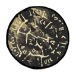
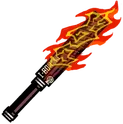
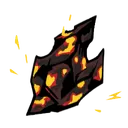
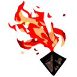

화상
1티어
융해된 파라핀
화상 위력, 화상 횟수, 특수 화상을 부여하는 스킬로 합 승리 시, (남은 코인 수/2)만큼 대상 적에게 화상 위력 부여
재에서 재로
전투 시작 시 모든 적(환상체일 경우, 모든 부위)이 화상에 걸린 경우, 적 전체(환상체일 경우, 모든 부위)에게 화상 위력 2 부여
타오르는 지성
화상 효과로 적을 처치하였다면 다음 턴 시작 시, 화상 위력을 부여하는 스킬을 보유한 아군 인격 둘이 피해량 증가 1 얻음.
편광
아군이 대상보다 정신력이 30 이상 높을 경우, 화상 위력 또는 화상 횟수 또는 특수 화상을 부여하는 스킬로 입히는 피해량 +7.5%
2티어
울화통
"화상 또는 특수 화상에 걸린 적에게 스킬 효과로 화상 위력이나 횟수 또는 특수 화상을 부여할 경우, 다음 턴에 신속 1 얻음. (스킬 당 1회, 턴당 최대 2회)
신속을 이미 보유한 경우, 효과가 강화되어 신속 1, 공격 레벨 증가 2 얻음"
신속을 이미 보유한 경우, 효과가 강화되어 신속 1, 공격 레벨 증가 2 얻음"

일점타격논리회로
화상 위력 또는 특수 화상을 부여하는 스킬 또는 질투 속성 스킬을 사용하여 적에게 적중 시, 대상에게 해당 스킬의 코인 수 절반만큼 추가로 화상 위력 부여. (소수는 올림하여 계산)
- [중첩 발동 불가] 입주 신고 히스클리프 E.G.O 패시브 「회로 연결」 발동 시, 이 효과가 발동하지 않음.
적중시 대상의 화상 위력이 99면, 주민등록 마이크로칩 1 부여 (적당 1회, 턴당 3회)
- [중첩 발동 불가] 입주 신고 히스클리프 E.G.O 패시브 「회로 연결」 발동 시, 이 효과가 발동하지 않음.
적중시 대상의 화상 위력이 99면, 주민등록 마이크로칩 1 부여 (적당 1회, 턴당 3회)
작열우모
화상 위력 또는 특수 화상을 부여하는 스킬 또는 색욕 속성의 스킬을 사용하여 대상에게 적중 시, 대상에게 화상 위력 3 부여.
턴 시작 시 화상 20 이상을 보유한 적의 경우, 화상이 2배로 증가
턴 시작 시 화상 20 이상을 보유한 적의 경우, 화상이 2배로 증가

지옥나비의 꿈
화상 또는 특수 화상에 걸린 적에게 스킬 효과로 화상 위력 또는 특수 화상을 부여할 경우, 모든 적에게 화상 위력 3 무작위로 나누어 부여.
분노 완전 공명을 발동하였다면 전투 시작 시, 모든 적에게 화상 위력 5 무작위로 나누어 부여
분노 완전 공명을 발동하였다면 전투 시작 시, 모든 적에게 화상 위력 5 무작위로 나누어 부여
만년 동안 끓는 솥
위력, 화상 횟수 또는 특수 화상을 부여하는 스킬의 합 위력 +1
만년 화롯불
종료 시, 화상 횟수를 3 이상 보유한 적이 화상을 1회 더 발동함 (화상 횟수 1 감소)

혈염도
첫 턴 시작 시, 자신에게 화상을 부여하는 기본 공격 스킬을 보유한 인격이 화상 5를 얻고, 정신력 8 회복
흑수 - 유 소속 인격이 유지 또는 회복 가능한 최대 체력의 상한선이 49%로 고정되는 대신 받는 피해량과 자신이 받는 체력 회복량이 50% 감소 (E.G.O 기프트로 인한 회복 제외)
흑수 - 유 소속 인격이 유지 또는 회복 가능한 최대 체력의 상한선이 49%로 고정되는 대신 받는 피해량과 자신이 받는 체력 회복량이 50% 감소 (E.G.O 기프트로 인한 회복 제외)
3티어

그을린 원반
상태인 적이 사망하였을 경우(환상체일 경우, 본체 사망 시), 남은 화상 위력 수치의 절반만큼을 다음 턴 시작 시 화상 위력 수치가 제일 적은 적 중 하나에게 부여.
턴 시작 시 화상 상태인 적에게 이번 턴 동안 공격 레벨 감소 4 부여
턴 시작 시 화상 상태인 적에게 이번 턴 동안 공격 레벨 감소 4 부여

먼지에서 먼지로
웨이브 첫 턴 시작 시, 모든 적(환상체일 경우, 무작위 부위 하나)에게 화상 위력 8, 화상 횟수 3 부여.
나태 공명을 발동하였다면 전투 시작 시, 모든 적(환상체일 경우, 무작위 부위 하나)에게 화상 위력 4, 화상 횟수 3 부여
나태 공명을 발동하였다면 전투 시작 시, 모든 적(환상체일 경우, 무작위 부위 하나)에게 화상 위력 4, 화상 횟수 3 부여
불빛꽃
분노 공명이 3 이상이면 화상 위력, 횟수 또는 특수 화상을 부여하는 스킬의 합 위력 +1
- 분노 완전 공명 3 이상이거나 분노 공명이 6 이상이면, 대신 합 위력 +2
[편성 1번, 2번 인격 전용 효과]
아군이 적을 공격할 때 대상의 남은 체력이 최대 체력의 (보유한 화상 위력)% 이하일 경우 (환상체일 경우, 본체 체력으로 계산), 화상 위력 또는 화상 횟수 또는 특수 화상을 부여하는 공격 스킬로 입히는 피해량 +50%"
- 분노 완전 공명 3 이상이거나 분노 공명이 6 이상이면, 대신 합 위력 +2
[편성 1번, 2번 인격 전용 효과]
아군이 적을 공격할 때 대상의 남은 체력이 최대 체력의 (보유한 화상 위력)% 이하일 경우 (환상체일 경우, 본체 체력으로 계산), 화상 위력 또는 화상 횟수 또는 특수 화상을 부여하는 공격 스킬로 입히는 피해량 +50%"
뜨거운 육즙 다리살
스킬로 적에게 화상 부여 시 화상 횟수 3 증가. (턴 당 최대 3회)
로열 젤리 퍼퓸
[편성 6번 인격 전용 효과]
스테이지 시작 시 페로몬 1 얻음
화상이 있는 적에게 받는 피해량 -15%
턴 종료 시 자신에게 피해를 가장 많이 준 적 1명(집중 전투에서는 부위로 판정)에게 다음 턴에 페로몬 표식 부여
- 적에게 피해를 받지 않았으면, 무작위 적 1명(집중 전투에서는 부위로 판정)에게 다음 턴에 페로몬 표식 부여
스테이지 시작 시 페로몬 1 얻음
화상이 있는 적에게 받는 피해량 -15%
턴 종료 시 자신에게 피해를 가장 많이 준 적 1명(집중 전투에서는 부위로 판정)에게 다음 턴에 페로몬 표식 부여
- 적에게 피해를 받지 않았으면, 무작위 적 1명(집중 전투에서는 부위로 판정)에게 다음 턴에 페로몬 표식 부여
잔불
"턴 시작 시, 모든 적(환상체일 경우, 모든 부위)의 화상 횟수 1~2 증가.
화상을 보유한 적이 아군으로부터 화상 위력, 화상 횟수 또는 특수 화상을 부여하는 공격 스킬(E.G.O 스킬 포함)로 5회 적중받을 경우, 화상이 1회 발동하고 화상 횟수 1 감소 (적 별로 턴 당 2회, 환상체일 경우 부위 별로 계산)"
화상을 보유한 적이 아군으로부터 화상 위력, 화상 횟수 또는 특수 화상을 부여하는 공격 스킬(E.G.O 스킬 포함)로 5회 적중받을 경우, 화상이 1회 발동하고 화상 횟수 1 감소 (적 별로 턴 당 2회, 환상체일 경우 부위 별로 계산)"
재점화 플러그
화상 횟수를 부여하는 기본 공격 스킬의 피해량 +20%, 화상 횟수 부여량 +1. 해당 스킬을 사용하여 화상 또는 특수 화상을 보유한 적에게 적중 시, 방어 레벨 감소 1 부여 (인격 별로 턴 당 2회)
모든 기본 공격 스킬이 화상 위력, 화상 횟수 또는 특수 화상을 부여하는 인격이 턴 시작 시, 생존한 턴만큼 공격 레벨 증가를 얻음 (등장 턴 제외, 최대 5)
모든 기본 공격 스킬이 화상 위력, 화상 횟수 또는 특수 화상을 부여하는 인격이 턴 시작 시, 생존한 턴만큼 공격 레벨 증가를 얻음 (등장 턴 제외, 최대 5)
점화 장갑
위력 또는 특수 화상을 부여하는 기본 공격 스킬로 적과 합 승리 시, 화상 위력 2 부여 (인격 별로 턴 당 2회).
화상 횟수를 부여하는 기본 공격 스킬로 적과 합 승리 시, 대상의 화상 횟수 2 증가. (적 별로 턴 당 3회)
화상 위력, 화상 횟수 또는 특수 화상을 부여하는 기본 공격 스킬이 각 스킬의 보유량만큼 공격 레벨이 증가 (최대 3).
- 해당 스킬의 보유량이 3개 이상인 경우, 공격 레벨이 2만큼 추가로 증가.
화상 횟수를 부여하는 기본 공격 스킬로 적과 합 승리 시, 대상의 화상 횟수 2 증가. (적 별로 턴 당 3회)
화상 위력, 화상 횟수 또는 특수 화상을 부여하는 기본 공격 스킬이 각 스킬의 보유량만큼 공격 레벨이 증가 (최대 3).
- 해당 스킬의 보유량이 3개 이상인 경우, 공격 레벨이 2만큼 추가로 증가.
붉은색 넥타이
화상 위력 또는 화상 횟수 또는 특수 화상을 부여하는 스킬 3의 합 위력 +2, 피해량 +30%

시험 추출 : 홍염살
화상 위력, 화상 횟수 또는 특수 화상을 부여하는 공격 스킬의 피해량 +10%
- 자신의 화상 횟수를 증가하는 스킬이면, 추가로 합 위력 +1
- 자신의 잃은 체력 2%당, 추가로 피해량 +1% (최대 15%)
- 자신의 화상 횟수를 증가하는 스킬이면, 추가로 합 위력 +1
- 자신의 잃은 체력 2%당, 추가로 피해량 +1% (최대 15%)
요리 비법 전서
턴 시작 시, 화상 위력, 화상 횟수 또는 특수 화상을 부여하는 공격 스킬을 보유한 인격이 5인 이상이면, 이번 전투 동안 발동 (E.G.O 스킬 제외. 대기 인원 제외)
화상 위력, 화상 횟수 또는 특수 화상을 부여하는 스킬의 최종 위력 +1
화상 위력, 화상 횟수 또는 특수 화상을 부여하는 스킬로 합 승리 시, (남은 코인 수/2+1)만큼 대상 적에게 화상 위력을 부여
화상 위력, 화상 횟수 또는 특수 화상을 부여하는 스킬의 최종 위력 +1
화상 위력, 화상 횟수 또는 특수 화상을 부여하는 스킬로 합 승리 시, (남은 코인 수/2+1)만큼 대상 적에게 화상 위력을 부여
4티어

불꽃의 편린
턴 종료 시, 화상 상태인 적에게 대상이 보유한 화상 횟수의 절반만큼을 소모하여 (화상 위력 × 소모한 화상 횟수)만큼 추가 분노 피해를 입힘. (화상 횟수 최대 5 소모)
불꽃의 편린 효과로 소모한 화상 횟수만큼, 다음 턴 동안 대상의 방어 레벨 감소 (최대 3)
불꽃의 편린 효과로 소모한 화상 횟수만큼, 다음 턴 동안 대상의 방어 레벨 감소 (최대 3)
업화 조각
화상 위력, 화상 횟수 또는 특수 화상을 부여하는 E.G.O 스킬 사용시 발동.
소모하는 (분노 E.G.O 자원 +나머지 E.G.O 자원의 합/3)만큼 최종 위력이 증가, 피해량 +50%
분노 속성 E.G.O 스킬의 경우, 효과가 강화되어 공격 시작 전에 화상 횟수를 추가로 부여(ZAYIN의 경우 2, 등급이 오를수록 +1)하고 피해량 +(공격 가중치/공격 대상 수×20)%
소모하는 (분노 E.G.O 자원 +나머지 E.G.O 자원의 합/3)만큼 최종 위력이 증가, 피해량 +50%
분노 속성 E.G.O 스킬의 경우, 효과가 강화되어 공격 시작 전에 화상 횟수를 추가로 부여(ZAYIN의 경우 2, 등급이 오를수록 +1)하고 피해량 +(공격 가중치/공격 대상 수×20)%
달궈진 놋쇠
화상 위력 최댓값 +11
전투 중 가장 처음으로 부여하는 화상 위력 부여 값 3배로 증가 (전투당 1회)
전투 중 가장 처음으로 부여하는 화상 위력 부여 값 3배로 증가 (전투당 1회)
부화하지 않은 불씨
사망할 정도의 피해를 입었다면, 해당 공격 동안 체력이 1로 유지되고 해당 공격 종료시 전체 체력의 20%만큼 회복함. (전투당 1회 발동)
불타는 운명
화상을 보유한 대상과 합 승리시 20+(분노 공명 수 × 10)% 확률로 화상 발동 1회, 대상의 화상 횟수 1 감소 (턴당 최대 4회 발동)
- 대상의 화상 위력이 90 이상이면, 확률을 100%로 고정함 (집중 전투일 경우, 부위로 판정)
진혼
턴 시작 시, 화상 위력, 화상 횟수 또는 특수 화상을 부여하는 공격 스킬을 보유한 인격이 5인 이상이면, 이번 전투 동안 발동 (E.G.O 스킬 제외. 대기 인원 제외)
턴 시작 시, 모든 적(환상체일 경우, 모든 부위)에게 화상 횟수 3을 부여하고 화상 위력 15를 무작위로 나누어 부여. (웨이브 당 최대 1회)
화상 위력, 화상 횟수 또는 특수 화상을 부여하는 더하기 코인 스킬의 최종 위력 +1, 코인 위력 +1, 화상 위력 부여 값 +1, 화상 횟수 부여 값 +1.
- 빼기 코인 스킬일 경우, 코인 위력 대신 기본 위력 +(4/코인 수) (최소 1, 소수점 버림)
화상 위력, 화상 횟수 또는 특수 화상을 부여하는 스킬로 합 승리 시, (남은 코인 수 + 1)만큼 대상 적에게 화상 위력을 부여

훔쳐온 불꽃
턴 시작 시, 화상 위력, 화상 횟수 또는 특수 화상을 부여하는 공격 스킬을 보유한 인격이 5인 이상이면, 이번 전투 동안 발동 (E.G.O 스킬 제외. 대기 인원 제외)
스킬(E.G.O 스킬 포함) 적중 시 대상의 화상 횟수가 3 이상이면, 대상의 화상을 1회 발동함. (화상 횟수 1 감소, 스킬당 1회 발동)
턴 종료 시, 화상 횟수를 3 이상 보유한 적이 화상을 1회 더 발동함. (화상 횟수 1 감소)
화상 상태인 적이 사망하였을 경우(환상체일 경우, 본체 사망 시), 남은 화상 위력 수치만큼을 다음 턴 시작 시 화상 위력 수치가 제일 적은 적 중 하나에게 부여.
턴 시작 시 화상 상태인 적에게 이번 턴 동안 공격 레벨 감소 4 부여.
화상을 보유한 적이 사망하였을 경우, 다음 턴 시작 시, 화상 부여 스킬을 보유한 아군 (사망한 적의 화상 위력/15)명이 피해량 증가 2 얻음 (턴 당 1회 발동)
스킬(E.G.O 스킬 포함) 적중 시 대상의 화상 횟수가 3 이상이면, 대상의 화상을 1회 발동함. (화상 횟수 1 감소, 스킬당 1회 발동)
턴 종료 시, 화상 횟수를 3 이상 보유한 적이 화상을 1회 더 발동함. (화상 횟수 1 감소)
화상 상태인 적이 사망하였을 경우(환상체일 경우, 본체 사망 시), 남은 화상 위력 수치만큼을 다음 턴 시작 시 화상 위력 수치가 제일 적은 적 중 하나에게 부여.
턴 시작 시 화상 상태인 적에게 이번 턴 동안 공격 레벨 감소 4 부여.
화상을 보유한 적이 사망하였을 경우, 다음 턴 시작 시, 화상 부여 스킬을 보유한 아군 (사망한 적의 화상 위력/15)명이 피해량 증가 2 얻음 (턴 당 1회 발동)
제식 복장 - 리우 협회
턴 시작 시, 화상 위력 또는 화상 횟수 또는 특수 화상을 부여하는 공격 스킬을 보유한 인격이 5인 이상이면, 이번 전투 동안 발동 (E.G.O 스킬 제외, 대기 인원 제외)
리우 협회 소속 인격의 기본 공격 스킬의 더하기 코인 위력 +2 (빼기 코인 스킬일 경우, 기본 위력 +(8/코인 수) (최소 1, 소수점 버림))
화상 위력 또는 화상 횟수 또는 특수 화상을 부여하는 스킬 3이 아닌 스킬의 피해량 +20% (E.G.O 스킬 포함)
화상 위력 또는 화상 횟수 또는 특수 화상을 부여하는 스킬 3의 더하기 코인 위력 +1 (빼기 코인 스킬일 경우, 기본 위력 +(4/코인 수) (최소 1, 소수점 버림)), 피해량 +30%
- 동일한 소속 인격을 편성한 수당 해당 소속 인격의 해당 스킬 피해량 5% 증가 (최대 20%, 대기 인원 포함)
턴 종료 시 정신력이 가장 낮은 아군 2명의 정신력 8 회복
- 대상의 정신력이 0 이하면, 추가로 5 회복
리우 협회 소속 인격의 기본 공격 스킬의 더하기 코인 위력 +2 (빼기 코인 스킬일 경우, 기본 위력 +(8/코인 수) (최소 1, 소수점 버림))
화상 위력 또는 화상 횟수 또는 특수 화상을 부여하는 스킬 3이 아닌 스킬의 피해량 +20% (E.G.O 스킬 포함)
화상 위력 또는 화상 횟수 또는 특수 화상을 부여하는 스킬 3의 더하기 코인 위력 +1 (빼기 코인 스킬일 경우, 기본 위력 +(4/코인 수) (최소 1, 소수점 버림)), 피해량 +30%
- 동일한 소속 인격을 편성한 수당 해당 소속 인격의 해당 스킬 피해량 5% 증가 (최대 20%, 대기 인원 포함)
턴 종료 시 정신력이 가장 낮은 아군 2명의 정신력 8 회복
- 대상의 정신력이 0 이하면, 추가로 5 회복